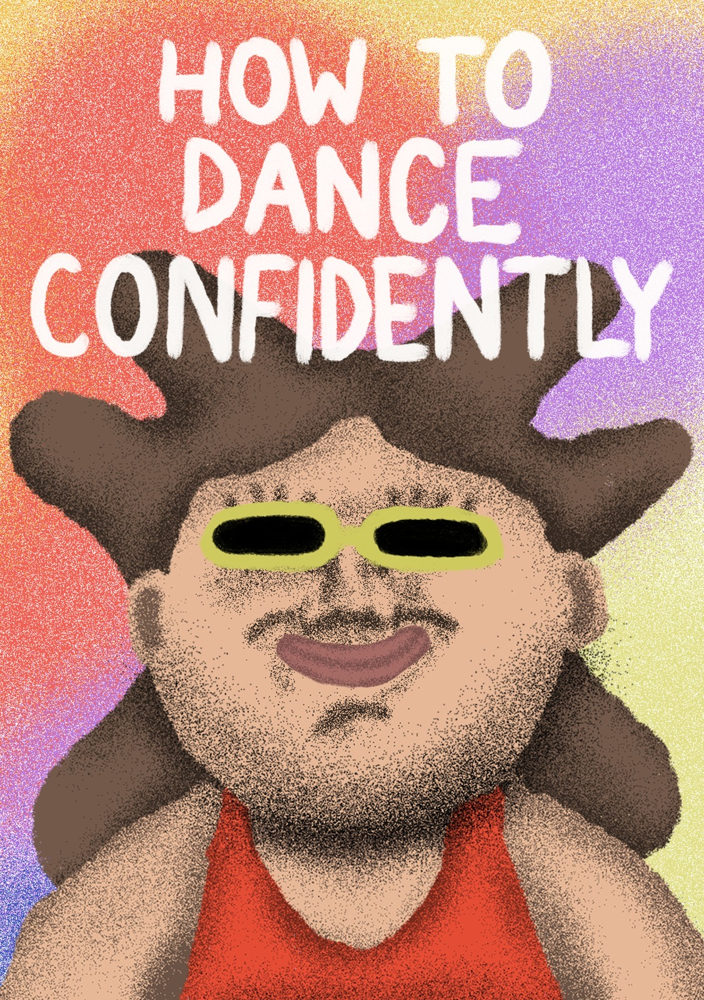

How to Dance Confidently

‘How To Dance Confidently is my final year animation project in media & communications at Goldsmiths! Dancing is seen as the quickest route to joy, but for many people that route can get a little confusing. Like with most activities, dancing can be a source of disappointment, distress and bitter self-consciousness. But if you stick around and give it another chance you might just learn how to dance confidently and reach a sense of profound joy and happiness. Drawing on ancient philosophies and contemporary critical theory, this animated tutorial seeks to reveal the life-enhancing qualities of dance in order to help us overcome dancefloor anxiety.